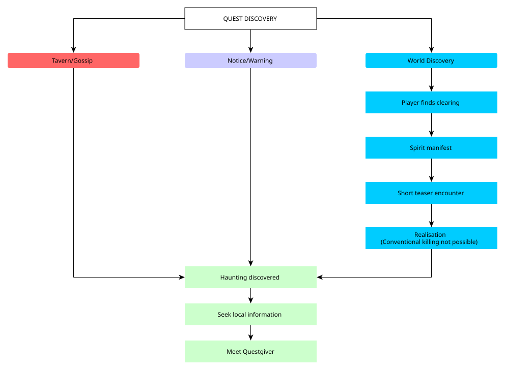
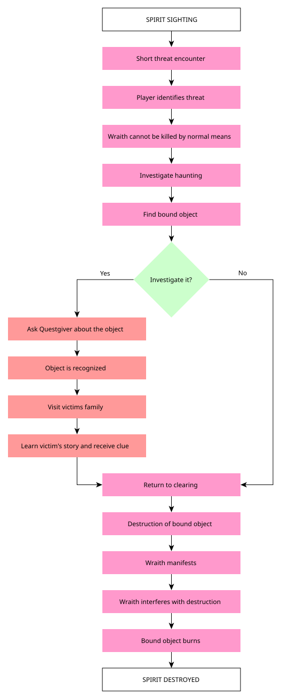
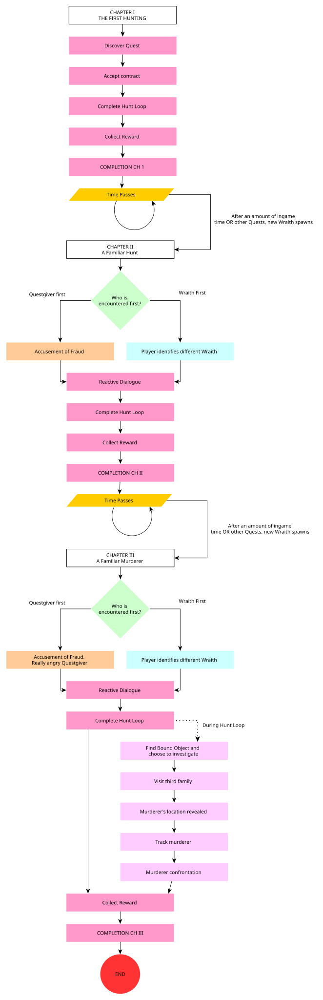
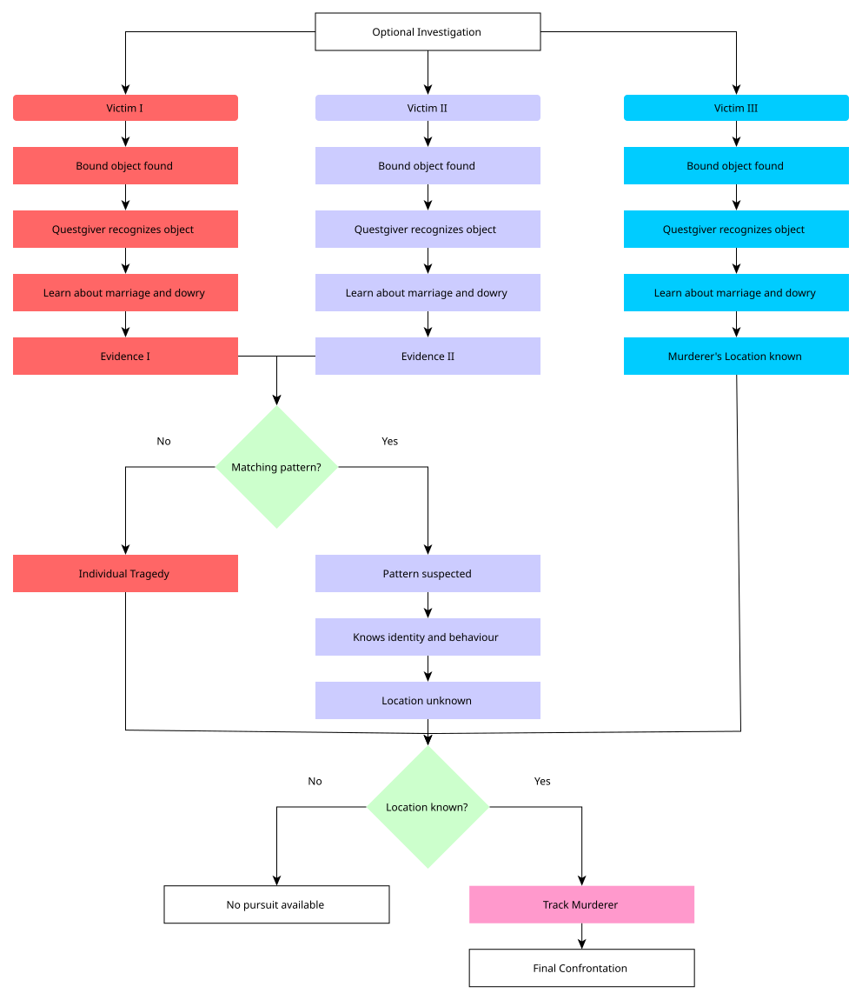
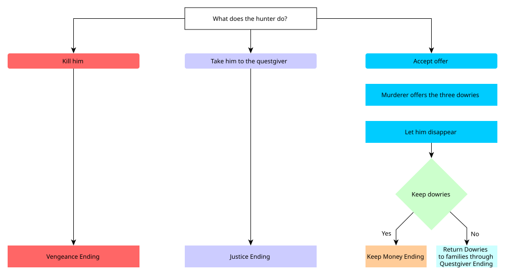

Poor villages, dangerous roads and communities with little protection.
Quest Concept · Open World RPG
Sisters in
Spirit
A supernatural contract that can remain a straightforward monster hunt, or unfold into an investigation of three murdered women and the man responsible for their deaths.
Open World Discovery
Optional Investigation
Quest Chain
Choice & Consequence
Contract
Something restless
walks the clearing.
walks the clearing.
- Known threat
- 1 Apparition
- Actual threat
- 3 Hauntings
- Hidden cause
- Player dependent
01
Quest Concept
A local haunting is only the visible problem. The quest is built around how far the player chooses to look beyond the contract.
A skilled contractor who survives by solving problems other people cannot.
A deadly spirit has appeared on a clearing between neighboring settlements.
The marriage fraud and murders remain undiscovered if the player only completes the supernatural work.
Core Design Question
When the contract only asks for a monster to die, how much does the player choose to care about the person it used to be?
02
Discoverable Before It Is Assigned
The quest is designed for an open world. The player can hear about the threat socially, or encounter the clearing first and search for context afterward.
The world points toward the problem.
Tavern talk, village gossip, a notice board, a road warning or the questgiver can all surface the same local problem.
The player can find the problem first.
If the clearing is discovered before the contract, the apparition briefly manifests. The hunter recognizes the type of threat and the quest points back toward nearby locals for information.

03
The Haunting Loop
The first encounter is a teaser, not a full fight. The hunter already knows that brute force cannot permanently destroy this kind of apparition.
Recognize
A short manifestation establishes danger and lets the player character demonstrate professional knowledge.
Find the Anchor
Each spirit is bound to a physical object that must be located before the haunting can end.
Choose to Investigate
The object can be researched before destruction, but the supernatural objective never requires it.
Return to the Clearing
The object can only be destroyed where the spirit manifests.
Earn the Exorcism
The restless spirit actively prevents the burning. The player must control the encounter long enough to destroy the anchor.

What the player fightsA monster.
What the player can discoverA person.
04
A Quest That Returns to the Player
The three hauntings are separated by time and world reaction. Each chapter appears resolved before the problem surfaces again.
The Contract
The first apparition is destroyed. The player can collect the reward and leave believing the job is complete.
The Accusation
A later rumor brings the player back. The angry questgiver believes the hunter lied because another apparition now walks the clearing. The hunter identifies it as a different spirit.
The Pattern
A third haunting confirms that the clearing is not a single isolated incident. Only researched victim stories can turn that repetition into a human investigation.
Open World Persistence
The next chapter should not use a visible waiting timer. It becomes eligible after the player has left the area and the world state has advanced, then resurfaces through rumor, dialogue or renewed travel through the region.

05
Curiosity Is the Branch
The player never receives a single yes-or-no prompt asking whether they care. That decision is expressed through what they do with each bound object before burning it.
Take the object back to the clearing.
Burn it, destroy the spirit and continue the job. The victim's personal history can be lost permanently.
or
Show the object to the questgiver first.
The item is recognized. A family becomes identifiable. Visiting them reveals who the victim was and adds a clue to the larger pattern.
The hunter can finish the supernatural contract without ever discovering a human culprit.
The player understands a personal tragedy, but does not yet have a reliable pattern.
Marriage, dowry and a vanished husband can surface as a new optional lead.
The repeated method gives the player enough information to identify and track the travelling husband.

06
The Human Monster
Only players who pursue the investigation reach this confrontation. The contract can be completed without ever meeting him.
Kill Him
The hunter delivers immediate justice and ends the threat personally.
Bring Him Back
Capture the murderer and return him to the questgiver. The expanded result earns a higher reward than the original monster contract.
Take the Dowries
Accept the three dowries and let him disappear. The player then chooses whether to keep the recovered wealth or return it through the questgiver.

07
Design Intent
The quest is meant to support both the efficient contractor and the curious investigator without treating either playstyle as invalid.
The player can encounter the problem naturally instead of waiting for an NPC to activate it.
Curiosity is expressed through repeated optional actions rather than one explicit morality prompt.
Time between chapters makes the recurring hauntings feel like a developing regional problem.
The human culprit does not exist as playable content for a hunter who never chooses to look beyond the spirits.
Production Resources
Design & ScriptingQuest states, triggers, encounter logic
Art & VFXWraiths, bound objects, environment dressing
Narrative & AudioVictim stories, NPC dialogue, VO
QABranch testing, discovery order, edge cases
Cost reductions: Reuse one Wraith rig and the clearing, avoid unique family interiors and cinematics, and limit voiced lines to key moments. Keep the optional investigation intact.
Quest Thesis
The hunter can solve every monster problem without ever discovering the human one.